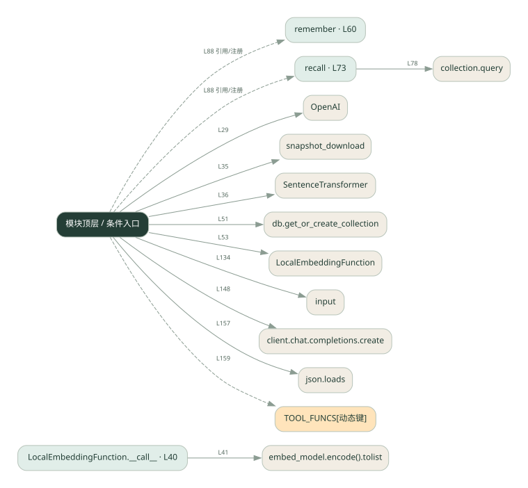

1-4 · 全课程第 4 节
跨会话记忆
001.py
源码快照 f0bac7cdb862 · 静态解析 · 2026-09-10
01 / 要完成的事
把值得保留的信息写入向量库，下次用问题检索回来。
02 / 为什么要做
程序重启后，普通 messages 列表会丢失；持久化让过去的信息还能参与回答。
03 / 当前代码状态
仍有下划线占位表达式，源文件行号：49, 67, 68, 79, 80。相应路径在补完前不能正常执行。
存在外部服务或模型依赖；执行前需按源文件配置依赖和凭据，可能联网或产生 API 费用。 本次只做静态解析，没有运行练习，也没有替你填写或修改原代码。
04 / 调用图
打开大图 ↗实线：源码中的直接调用；虚线：函数引用/注册、动态调用或按方法名推断的候选。L 是调用所在源码行号。箭头不表示执行顺序或每次必经；分支、循环、异步调度及框架内部调用需结合源码。灰色是外部/未解析目标，橙色是动态分发；省略 print、len 和常规容器操作以减少干扰。孤立函数可能尚未接入。

先从 模块入口 出发，沿箭头找到本文件函数，再查看外部调用或动态分发。右侧调用清单保留所有静态调用点，能回到原文件逐行对照。
05 / 函数定位
| 函数 / 定义行 | 职责（源码注释） | 内部调用 |
|---|---|---|
LocalEmbeddingFunction.__call__L40 | 以源码函数体为准；下列调用展示其依赖。 | embed_model.encode().tolist, embed_model.encode |
rememberL60 | 把重要信息写进长期记忆 | collection.add |
recallL73 | 从长期记忆检索相关信息 | collection.query, 动态对象.join |
这样做的优点
只取相关记忆，避免把所有历史都塞进提示词。
代价与局限
相似度不等于事实正确；需要处理过期记忆、重复数据和用户隔离。
适用场景
需要记住用户长期偏好的助手。
不宜直接照搬
一次性问答，或没有权限保存个人信息的服务。
动手检验理解
记住“我喜欢清淡”，换一种问法询问饮食偏好，观察 recall 是否找到原记录。
有未实现位置时先预测，再补齐验证。能启动不等于逻辑正确。
查看全部 38 个静态调用 / 引用点
| 调用方 | 目标 | 源码行 | 类型 |
|---|---|---|---|
| <模块入口> | OpenAI | 29 | 调用 |
| <模块入口> | print | 34 | 调用 |
| <模块入口> | snapshot_download | 35 | 调用 |
| <模块入口> | SentenceTransformer | 36 | 调用 |
| LocalEmbeddingFunction.__call__ | embed_model.encode().tolist | 41 | 调用 |
| LocalEmbeddingFunction.__call__ | embed_model.encode | 41 | 调用 |
| <模块入口> | db.get_or_create_collection | 51 | 调用 |
| <模块入口> | LocalEmbeddingFunction | 53 | 调用 |
| <模块入口> | print | 56 | 调用 |
| <模块入口> | collection.count | 56 | 调用 |
| remember | collection.add | 66 | 调用 |
| recall | collection.query | 78 | 调用 |
| recall | 动态对象.join | 85 | 调用 |
| <模块入口> | print | 125 | 调用 |
| <模块入口> | print | 126 | 调用 |
| <模块入口> | print | 127 | 调用 |
| <模块入口> | print | 128 | 调用 |
| <模块入口> | print | 129 | 调用 |
| <模块入口> | print | 130 | 调用 |
| <模块入口> | input().strip | 134 | 调用 |
| <模块入口> | input | 134 | 调用 |
| <模块入口> | print | 136 | 调用 |
| <模块入口> | user.lower | 141 | 调用 |
| <模块入口> | print | 142 | 调用 |
| <模块入口> | messages.append | 145 | 调用 |
| <模块入口> | range | 147 | 调用 |
| <模块入口> | client.chat.completions.create | 148 | 调用 |
| <模块入口> | messages.append | 154 | 调用 |
| <模块入口> | json.loads | 157 | 调用 |
| <模块入口> | print | 158 | 调用 |
| <模块入口> | TOOL_FUNCS[动态键] | 159 | 调用 |
| <模块入口> | print | 160 | 调用 |
| <模块入口> | messages.append | 161 | 调用 |
| <模块入口> | str | 164 | 调用 |
| <模块入口> | print | 167 | 调用 |
| <模块入口> | messages.append | 168 | 调用 |
| <模块入口> | remember | 88 | 引用/注册 |
| <模块入口> | recall | 88 | 引用/注册 |